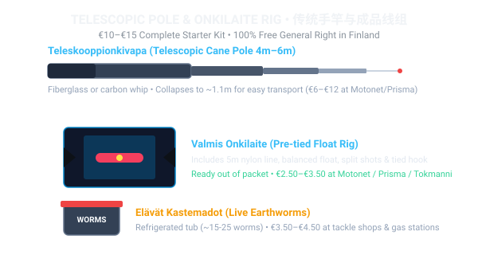
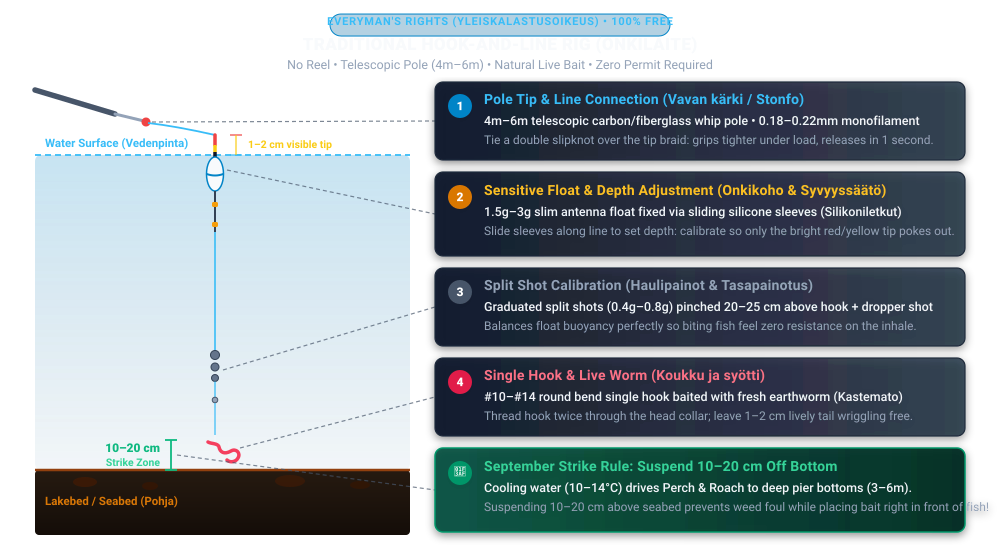

🍂 Autumn Arrival: The September Biological Window
In Finland, September marks the defining turning point of the open-water season. As daylight rapidly decreases and night frost approaches the archipelago, water temperatures in the Gulf of Finland and inland lake basins drop from summer highs (18°C+) to 10°C–14°C.
This cooling triggers the celebrated Syyssyönti (autumn feeding frenzy). Dying summer weedbeds force schools of young-of-the-year bleak (salakka), smelt (kuore), and roach (särki) out of shallow bays and into 3 to 12 meter deep depressions, drop-offs, and sound channels. Predatory European Perch (Ahven), Northern Pike (Hauki), and schooling cyprinids follow them closely, feeding aggressively to build fat reserves for 5 months of winter ice cover.
Under Finnish Fishing Law (Kalastuslaki), all flowing river rapids and streams inhabited by migratory salmonids (vaelluskalavesistöjen koski- ja virta-alueet) are strictly closed to all fishing from 1 September to 30 November to protect naturally spawning brown trout and salmon. However, sea waters, coastal bays, lakes, public piers, and non-salmonid waters are fully open.
🎣 Part 1: September Hook-and-Line Angling (Onkiminen) — The 100% Free Shore Gateway
If you are starting out or prefer a relaxing, zero-tangle afternoon by the water, Hook-and-Line Angling (Onkiminen) is the absolute best method in Finland:
- 100% Free under Everyman's Rights (Yleiskalastusoikeus): No license, no permit, and no fee are needed for anyone of any age or nationality across almost all public and private lakes, ponds, canals, and sea waters.
- Zero Mechanical Complexity: No casting reel, no bird's nests, no expensive rods. Just a simple telescopic pole, a monofilament line, a sensitive float, lead sinkers, and a single hook baited with a live earthworm.
🛒 Where to Buy Gear in Finland & The €10–€15 Starter Kit
You can purchase everything you need for less than €15 at major stores across Finland:
| Store Chain | Availability & Locations | What to Buy There | Live Bait (Earthworms)? |
|---|---|---|---|
| Motonet (#1 Recommendation) |
Automotive & leisure superstores (Roihupelto, Konala, Vantaa Tammisto, Espoo Lommila, etc.) | Best selection: Patriot 5m telescopic poles (~€8.99), pre-tied float rigs (valmis onkilaite, ~€2.50–€3.50), hooks, floats, buckets. | YES — Dedicated Bait Fridge (Elävät syötit): Live nightcrawlers (kastemadot ~€3.90/tub), worms (~€3.50), maggots (~€2.90). |
| Prisma (S-Group) |
Major shopping malls & stations (Tripla, Kaari, Sello, Iso Omena, Itäkeskus, etc.) | Dedicated Kalastus aisle with starter telescopic onki poles, ready float rigs, and hooks. | YES: Small refrigerated cooler usually near the fishing aisle or checkouts (May–Oct). |
| K-Citymarket (K-Group) |
Hypermarkets (Ruoholahti, Easton, Jumbo, etc.) | Seasonal fishing displays with affordable telescopic rods, line winders, and tackle boxes. | Seasonal: Most large outlets carry live earthworms in a cooler. |
| Tokmanni / Biltema | Suburban centers nationwide | Ultra-budget telescopic poles (€5–€8) and €1.99 float rigs. | Occasional / select stores. |
| ABC Gas Stations | 24/7 service stations on major highways | Sunday / early morning lifesaver when retail stores are closed! | YES: Refrigerator counter stocked with live earthworms (Matoja). |

🔧 The Onkilaite Terminal Rig & 4-Step Setup
Below is the anatomy of the traditional Finnish float rig. Study how the line, float, split shots, and worm hook are balanced:

- Tie Line to Pole Tip (Siiman kiinnitys): Modern telescopic poles feature a braided cord tip (or Stonfo plastic connector). Tie a double slipknot (马蹄结) on your monofilament line, slip the loop over the braid knot, and pull snug. Match total line length to your rod length (e.g. 5m line for a 5m rod).
- Balance the Float (Kohon painotus): Pinch split shot sinkers 20–25 cm above the hook. Add weight until only the brightly painted antenna (red/orange) sits above the water line.
- Set the Depth (Pohjaluotaus & Syvyyden säätö): Slide the silicone float sleeves along the line. Start deep until the float lies flat on the surface (sinker touches bottom), then slide the float down 15–25 cm. For Perch and Roach, your bait should suspend 10–20 cm above the seabed.
- Bait the Live Worm (Madon pujottaminen): Thread the hook through the worm's head collar twice, leaving 1–2 cm of lively wriggling tail. The movement and scent trigger immediate strikes.
🍂 Practical September Onkiminen Pier Tactics
- The 3m–6m Depth Migration: In July, fish swim in 0.5m water near shoreline reeds. In September, cooling water (10°C–14°C) drives schools of Perch (Ahven) and Roach (Särki) to deep pier faces, concrete canal quays, and marina drop-offs with 3 to 6 meters of depth.
- Use a 5m or 6m Pole (Not a 3m Pole): A 5m or 6m pole reaches right over pier edges and drops the bait vertically into deep water, completely clearing the shallow shoreline rocks.
- Live Worms are Mandatory: Cold autumn water triggers predatory feeding instincts. Fish ignore bread dough in September, but live earthworms (Kastemato) and maggots (Kärpäsentoukka) produce non-stop action.
- Reading the Autumn Bite:
- Perch (Ahven): The float bobs twice, then plunges decisively underwater (koho sukeltaa). Strike upward smoothly!
- Roach (Särki): Rapid trembling and vibrating bobbles. Strike when the float begins moving steadily sideways.
- Bream (Lahna): Lift-bite (koho kaatuu / 送漂) — the float rises flat onto the water surface as the fish lifts the sinker. Strike immediately!
- Best Time of Day: Late morning to late afternoon (11:00 AM – 17:00 PM), when the autumn sun warms surface water.
🎯 Part 2: September Heavy Jigging & Spinning (Viehekalastus & Jigaus)
For anglers targeting predatory trophy perch over 1 kg or autumn pike from the bank, casting softbaits with a spinning rod is unmatched. (Requires the National Fisheries Management Fee / Kalastonhoitomaksu for ages 18–69; €47/yr or €6/day via Eräluvat.fi).
🧰 Equipment Checklist for September Shore Jigging
| Gear Element | Autumn Specification | Why It Matters for Shore Anglers |
|---|---|---|
| Rod (Vapa) | 7'0"–7'6" (213–230cm), Fast action, Medium-Light (7–25g) | Longer rod allows greater casting distance from shore and better angle to lift jigs over shoreline rocks. |
| Reel (Kela) | Size 2500 Spinning Reel with smooth front drag | Rapid line retrieve (68–75cm per crank) to take up slack caused by gusty autumn winds. |
| Mainline (Kuitusiima) | 0.12mm – 0.14mm 8-strand PE Braid (Chartreuse / High-Vis Pink) | Zero stretch transmits bottom contact in 10m deep water; high-vis line lets you visually track subtle takes on the drop. |
| Leader (Peruke) | 1.0–1.5m of 0.30mm – 0.35mm 100% Fluorocarbon joined via Double Uni Knot | Abrasion resistance against razor-sharp zebra mussels encrusted on rocks and bridge pilings. |
| Pike Guard (Haukiperuke) | 15–20cm flexible titanium wire (15–20 lb) or 0.80mm heavy fluorocarbon | Autumn perch shoals are frequently patrolled by monster pike. A flexible wire leader prevents costly bite-offs. |
| Jigheads (Jigipäät) | 10g, 12g, and 15g round ball heads with #1/0 or #2/0 forged hooks | Cuts through coastal winds; reaches 8–12m seabed quickly without drifting off course. |
| Softbaits (Jigit) | 3"–4" (7.5–10cm) paddle tail shads and crawfish creature baits | Top Finnish autumn colors: Motor Oil (UV reactive green-gold) (#1 Finnish autumn color!), Bleak/Salakka (silver-blue flake), Ayu (natural olive), and Chartreuse/Firetiger. |
🎣 The 10–15g Bottom Bouncing Cadence (Pohjajigaus)
- Long Cast & Free-Spool Drop: Cast upwind or across current. Open the bail arm and watch the floating braided line. The exact second the line turns slack and floats loosely on the surface, your 12g jig has hit the seabed.
- Tension & Position: Close the bail, wind 2 rapid turns to eliminate line belly, and hold your rod tip at a steady 10 o'clock position pointing toward the lure.
- The 2-Turn Lift (Kaksi kammenpyöräytystä): Snap your wrist upward 20–30 cm while making 1 to 2 quick rotations of the reel handle. This pops the shad 50–80 cm off the silt, kicking up a puff of mud.
- The Gliding Fall (Vajotus) — The Strike Window: STOP winding. Keep the rod frozen at 10 o'clock with the line under constant, tight tension. The softbait will glide downward in a pendulum arc for 2–3 seconds. Over 90% of all autumn takes occur during this fall!
- The "Tick" & Hookset (Vastaisku): You will feel a sharp, metallic "tick" through the carbon blank or see the bright line twitch sideways. Strike immediately with a sharp upward wrist snap!
🎬 International Video Masterclasses (100% Verified)
Curated tutorials across Finnish, English, and Chinese instruction covering both Onkiminen and Shore Jigging:
🎣 Hook-and-Line Angling (Onkiminen) Tutorials
🎯 Shore Jigging & Dropshot Tutorials
📍 Top Helsinki Public-Transit Autumn Spots (Onkiminen & Jigging)
- Tervasaari Island Piers (Helsinki Kruununhaka): Walking distance from Helsinki center. Deep, sheltered harbor basin with 4–6m depth right off the wooden docks. Top Onkiminen spot in the city! Abundant autumn perch, roach, and bream.
- Ruoholahti Canal Basin (Ruoholahden kanava): Metro Ruoholahti or Tram 8/9. Sheltered concrete quay walls with 5–8m depth. Perfect for both Onkiminen and street dropshotting/jigging; completely sheltered from coastal gales.
- Lauttasaaren silta (Lauttasaari Bridge): Metro to Ruoholahti or Lauttasaari. The deep channel beneath the bridge (10–14m deep) is a prime transit corridor for predatory perch intercepting autumn herring. Cast 12–15g jigs into current seams.
- Vanhankaupunginlahti Suvanto (Pornaistenniemi side): Tram 6 or 8. The rapids above are closed for salmonid spawning, but the open tidal pool (Suvanto) and the Pornaistenniemi docks are fully open for perch and roach onkiminen and jigging in 4–7m mud depths.
- Uutela Särkkäniemi (Vuosaari): Metro to Vuosaari, then bus 90. Granite headlands dropping directly into open sea. Prime for coastal sea trout spinning on windy autumn days.